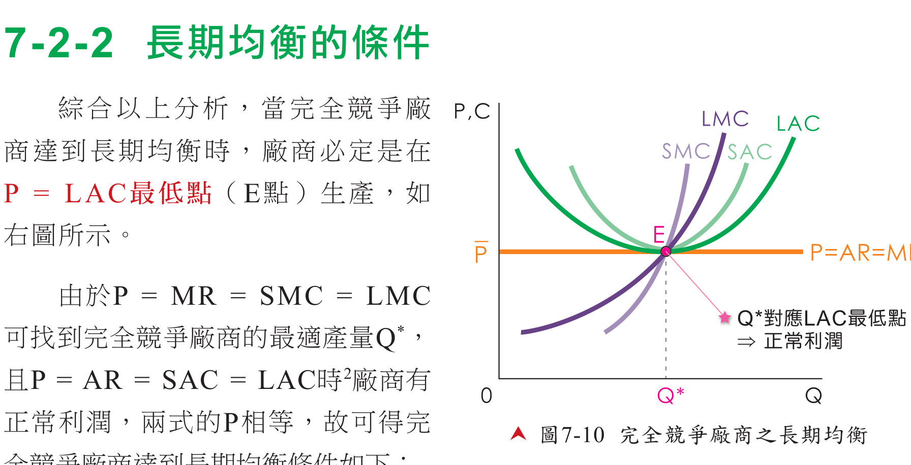

第 2 聯幅
統測商管群跨章思維重組 ｜ 整合 CH6 市場收益 ➔ CH7 完全競爭 ➔ CH8 完全獨占 ➔ CH9 獨占性競爭與寡占
🏛️ 一、市場光譜與廠商收益
CH6 收益基礎
6.1
市場結構四大判定維度
- 判定 4 指標：廠商數目、產品同質/異質、進出障礙難易、價格決定力。
- 競爭光譜：完全競爭（最激烈）➔ 獨占性競爭 ➔ 寡占 ➔ 完全獨占（獨占力最強）。

圖 6-1 競爭程度與獨占力量光譜圖
6.2
收益三指標 ＆ 兩類需求線
TR ＝ P × Q ｜ AR ＝ TRQ ＝ P ｜ MR ＝ △TR△Q
- 完全競爭四線合一：個別廠商需求線水平（Ed ＝ ∞），P ＝ AR ＝ MR ＝ D。TR 為過原點射線。
- 不完全競爭負斜率：P ＝ AR ＞ MR。MR 斜率為 AR 的 2 倍，橫截距為 一半！

圖 6-6 不完全競爭 TR、AR、MR 幾何連動
6.3
阿莫羅索公式 ＆ MR＝MC
MR ＝ P × ( 1 － 1|Ed| ) ｜ 利潤極大：MR ＝ MC
- |Ed| ＞ 1 ➔ MR ＞ 0 ➔ 降價使 TR 增加（薄利多銷）。
- |Ed| ＝ 1 ➔ MR ＝ 0 ➔ TR 達極大頂點。
- |Ed| ＜ 1 ➔ MR ＜ 0 ➔ 降價使 TR 減少。廠商絕不在此階段生產！
- 通用法則：所有市場追求利潤最大必取 MR ＝ MC，且 MC 斜率 ＞ MR 斜率。
⚖️ 二、完全競爭產量與價格
CH7 自由效率
7.1
短期均衡條件 ＆ 損益 5 情境
短期均衡決定 Q*：P ＝ MR ＝ SMC
- 超額利潤：P ＞ SAC，經濟利潤 π ＞ 0。
- 收支平衡點：P ＝ SAC 最低點，π ＝ 0（正常利潤）。
- 虧損續營運：AVCmin ＜ P ＜ SAC（補貼 TFC，虧損 ＜ TFC）。
- 短期歇業點：P ＝ AVC 最低點（營運與關廠虧損皆為 TFC）。
- 歇業關廠：P ＜ AVC 最低點（虧損 ＞ TFC，立即停業）。

圖 7-6 收支平衡點（B）與歇業點（C）判定
7.2
短期供給曲線 S ＝ MC
- 廠商短期供給線：整條 SMC 曲線高於 AVC 最低點以上的那一段（P ≧ AVCmin）。
- 當 P ＜ AVCmin 時，供給量 Q ＝ 0。
- 市場供給線：個別廠商供給線的「水平加總」（QM ＝ Σ qi）。

圖 7-8 短期供給曲線由 SMC 在 AVC 以上導出
7.3
長期「七位一體」完美均衡
P ＝ MR ＝ LMC ＝ SMC ＝ LACmin ＝ SACmin
- 自由進出機制：超額利潤誘使新廠商進入 ➔ 供給增、市價跌；虧損誘使退出 ➔ 市價回升。
- 長期利潤必為零：長期僅享正常利潤（π ＝ 0）。
- 社會福祉最大：兼具生產效率（在 LAC 最低點生產）與配置效率（P ＝ MC，無死重損失 DWL ＝ 0）。

圖 7-10 完全競爭長期均衡與市場出清
👑 三、完全獨占定價與差別取價
CH8 市場力量
8.1
獨占產量決定 ＆ 無供給曲線
MR ＝ MC 決定 Q* ➔ 對應需求線決定 P*（P* ＞ MC）
- 獨占無供給曲線：價格與產量不存在一一對應關係！同一價格可對應不同產量。
- 虧損去留準則：看 P 與 AVC。若 P ≧ AVC 繼續生產；P ＜ AVC 歇業。
- 長期均衡：高進入障礙（專利、特許、規模經濟），長期仍可享有超額利潤（P ＞ LAC）。

圖 8-2 獨占廠商利潤最大化均衡（超額利潤）
8.2
差別取價（價格歧視）三級制
- 一級（完全差別）：按消費者願付最高保留價逐一索價，CS ＝ 0 轉為 PS，產量同完全競爭，無死重損失。
- 二級（數量折扣）：分段階梯定價（如水電累進費率、量販包）。
- 三級（市場分割）：依彈性索價！彈性大索低價、彈性小索高價。
P1( 1 － 1|Ed1| ) ＝ P2( 1 － 1|Ed2| ) ＝ MC

圖 8-13 三級差別訂價（彈性大價低、彈性小價高）
8.3
死重損失 DWL ＆ 政府管制
- 福利死重損失：P ＞ MC 導致配置無效率，產量少（Qm ＜ Qc）、價格高（Pm ＞ Pc），產生三角形死重損失 DWL。
- 邊際成本定價法（P ＝ MC）：社會福利最大（DWL ＝ 0）。但自然獨占 MC ＜ AC，廠商必虧損，需政府補貼。
- 平均成本定價法（P ＝ AC）：廠商賺取正常利潤（收支平衡），無需補貼，為實務次佳解。

圖 8-14 獨占市場之死重損失 DWL（三角形 ABC）
⚔️ 四、獨占性競爭與寡占賽局
CH9 現實策略
9.1
獨占性競爭 ＆ 超額產能定理
- 特徵：廠商眾多、產品有差異（包裝、品質、服務）、進出自由。積極進行非價格競爭（廣告）。
- 長期相切均衡：自由進出使長期超額利潤歸零（P ＝ LAC），需求線切於 LAC 下降段。
- 超額產能定理：未在 LAC 最低點生產，有超額產能（產能未充分利用）。但提供了多樣化滿足！

圖 9-5 獨占性競爭長期相切均衡（P ＝ LAC）
9.2
寡占 ＆ 史威吉拗折需求線
- 寡占本質：少數大廠商互相牽制，決策具高度相互依存性。
- 史威吉核心假設：「跟跌不跟漲」！
• 漲價時：對手不跟進 ➔ 需求彈性大（曲線平坦）。
• 跌價時：對手立即跟進 ➔ 需求彈性小（曲線陡峭）。 - 價格僵固性：MR 曲線在折點下方出現垂直斷裂缺口！只要 MC 在缺口內變動，均衡價格 P* 與產量 Q* 維持不變！

圖 9-6 拗折需求線與 MR 缺口（價格僵固性）
9.3
卡特爾勾結 ＆ 囚犯困境賽局
- 卡特爾（Cartel，如 OPEC）：追求聯合利潤最大（ΣMC ＝ MR）。個別成員有私自偷產降價誘因，容易瓦解。
- 價格領導制：低成本或優勢大廠帶頭定價，小廠跟隨。
- 囚犯困境（Prisoner's Dilemma）：
個別廠商追求私利之優勢策略（打折促銷），最終落入非合作的奈許均衡（雙方皆促銷），利潤低於合作解！說明寡占為何偏好非價格競爭。
📊 跨章核心整合：統測必考四大市場結構全維度對照矩陣
| 比較維度 | 完全競爭（CH7） | 獨占性競爭（CH9） | 寡占市場（CH9） | 完全獨占（CH8） |
|---|---|---|---|---|
| 廠商數目 ＆ 產品 | 無數家；產品完全同質 | 眾多家；產品有差異化 | 少數幾家；同質或異質 | 僅此一家；獨一無二無替代 |
| 進出障礙 ＆ 訂價力 | 完全自由；價格接受者 | 自由進出；些微價格影響力 | 進出困難；彼此高度牽制 | 進出完全受阻；價格決定者 |
| 個別廠商面對需求線 | 水平直線（Ed ＝ ∞） | 向右下傾斜（彈性較大） | 拗折需求曲線（跟跌不跟漲） | 向右下傾斜市場需求線 |
| 價格與收益關係 | P ＝ AR ＝ MR | P ＝ AR ＞ MR | P ＝ AR ＞ MR（MR 斷裂） | P ＝ AR ＞ MR（斜率 2 倍） |
| 短期利潤極大準則 | P ＝ MR ＝ SMC | MR ＝ SMC（對應需求線訂價） | MR ＝ SMC（缺口內價格僵固） | MR ＝ SMC（對應需求線訂價） |
| 短期歇業關廠點 | P ＝ AVCmin | P ＝ AVCmin | P ＝ AVCmin | P ＝ AVCmin |
| 短期供給曲線 | 有！SMC ≧ AVCmin 之區段 | 無供給曲線！ | 無供給曲線！ | 無供給曲線！ |
| 長期經濟利潤 π | π ＝ 0（僅享正常利潤） | π ＝ 0（自由進出切點均衡） | π ≧ 0（受進出阻礙可有超額利潤） | π ≧ 0（極高障礙維持超額利潤） |
| 長期生產效率 | 有效率（在 LAC 最低點生產） | 無（具超額產能，在下降段） | 無（未在 LAC 最低點生產） | 無（未在 LAC 最低點生產） |
| 配置效率與福祉 | 最高！P ＝ MC，DWL ＝ 0 | P ＞ MC，有死重損失 DWL | P ＞ MC，有死重損失 DWL | 最低！P ＞ MC，DWL 最大 |
| 非價格競爭（廣告） | 無需廣告（產品完全同質） | 最盛！品牌包裝品質競爭 | 普遍採用（避免價格惡性戰） | 公關形象為主，無需推銷 |